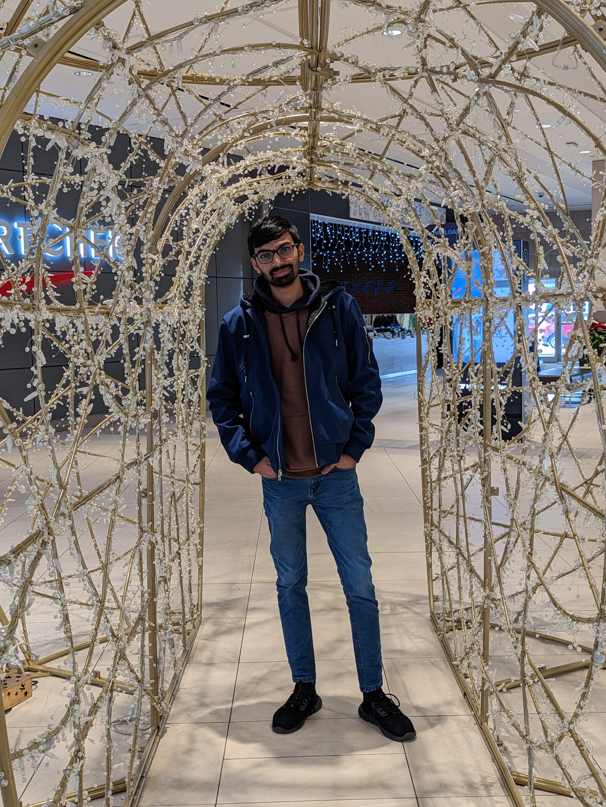
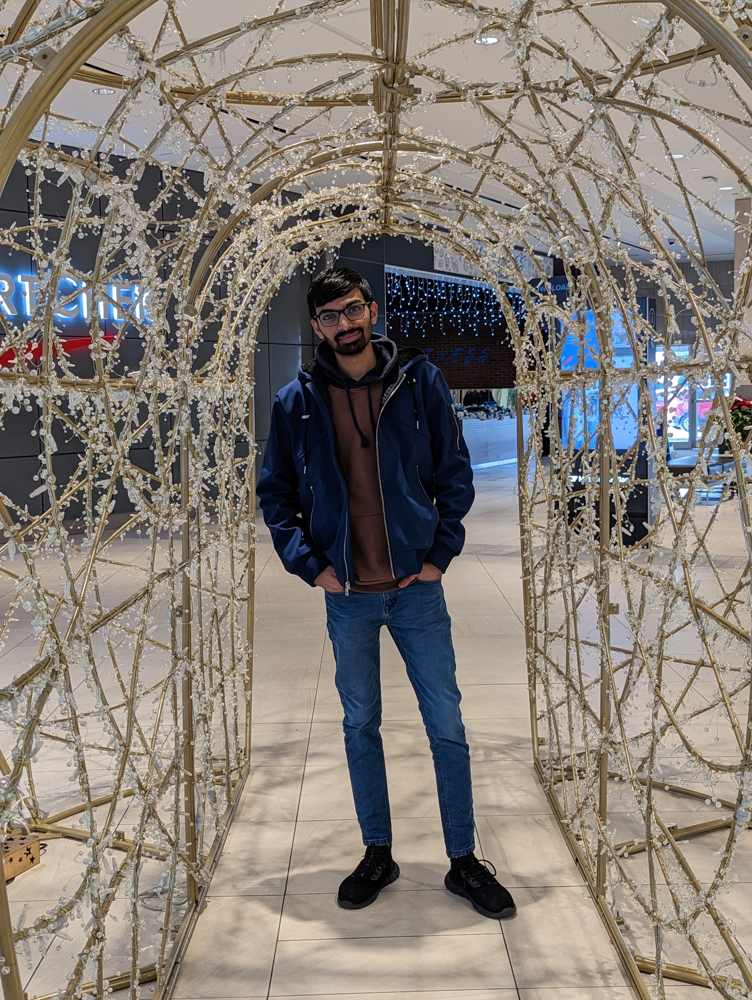

here i am share some of my photos and written introduction
 

introduction paragraph
Describing myself is one of the toughest tasks to do, but it's fascinating too, to put it to words. I believe our traits - be they positive or negative - make us the person we are to the world. When it comes to my personality, people can have different opinions because they see what they want to see in me, and that's okay. So, I would describe myself from the paradigm I see myself from in different aspects.
As a person, I believe life is an art, and I am the artist of my life. I try to keep it full of colors and as cheerful as possible no matter what life throws at me. I am an enthusiast and a person full of curiosity. Curious to know what life is all about and what it holds in the future
I like to keep a smile on my face no matter what I am going through, and that smile keeps me going. Besides, I was brought up in a multicultural community. Therefore, I am an extrovert, and I like to meet people, I love to experience their lives, cultures, and traditions, which makes me happy and cheerful.
Moreover, I am reliable but very short-tempered. I lose my calm if not understood properly. I get very irritated internally, but that doesn't show in my behavior. However, I would like to change this character trait a little because my friends and dear ones often do not notice that I have some troubles. Thus, they do not offer help when I need it.
Good or bad, this is me, trying to contemplate the world as it is, revealing its true colors. I believe life is a gift, and it should be treated like one, with love, care, and respect.
things that i like do most
my most favourite things to do is watching movies and content from internet. my favourite movies series is marvel.